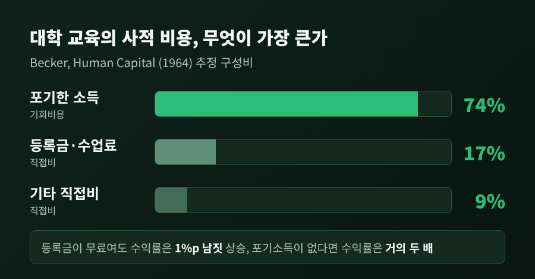
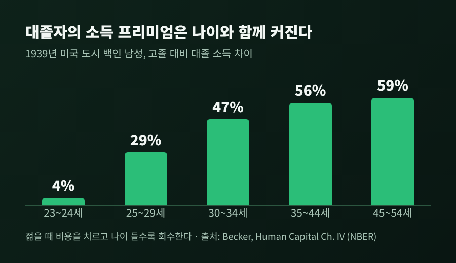
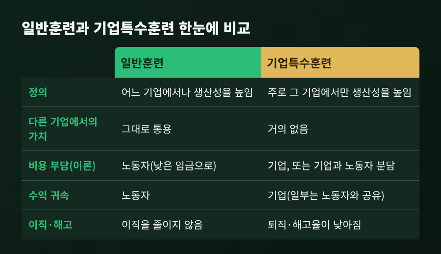
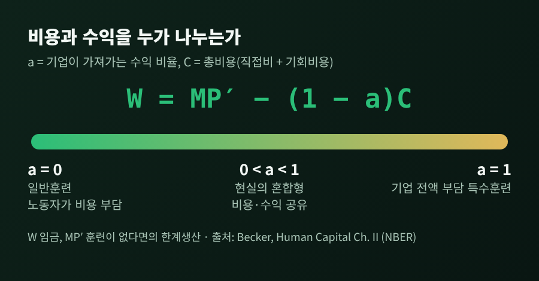
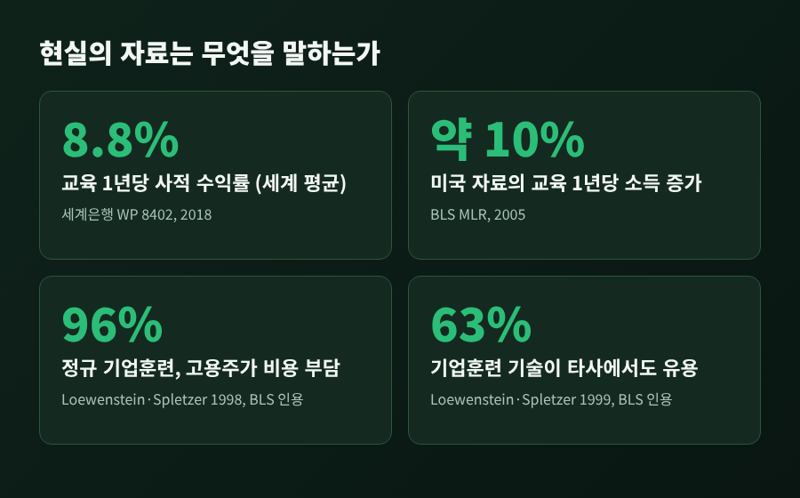

인적자본론, 교육이 수익률 있는 투자가 되는 이유와 일반·특수훈련의 차이

오늘은 게리 베커의 인적자본론을 정리해 보려 합니다.
핵심은 간단합니다. 교육과 훈련은 지금 비용을 치르고 나중에 더 높은 소득으로 돌려받는 투자이며, 그 수익률은 계산할 수 있다는 것입니다.
그리고 훈련이 일반적이냐 특정 기업에서만 쓰이느냐에 따라 비용을 누가 내고 수익을 누가 가져가는지가 달라진다는 것입니다.
■ 베커는 누구이고, 인적자본론은 무엇입니까
게리 S. 베커는 1951년 프린스턴대를 최우등으로 졸업하고, 시카고대에서 1955년 박사학위를 받은 경제학자입니다. 1957년부터 1968년까지 컬럼비아대에서 가르쳤습니다. 같은 시기에 NBER 연구원으로도 활동했습니다.
1964년 컬럼비아대 출판부에서 『Human Capital』을 펴냈습니다. 부제는 '교육을 중심으로 한 이론적·실증적 분석'입니다. 이 책은 1964년 W.S. 우친스키(Woytinsky) 상을 받았고, 1993년 3판까지 나왔습니다.
1992년에는 노벨 경제학상을 받았습니다. 수상 사유는 미시경제 분석의 영역을 인간 행동과 상호작용의 넓은 범위로 넓혔다는 것입니다. 합리적으로 목표를 최적화한다는 원리를 습관이나 비합리의 영역으로 여겨지던 곳에 적용했고, 인적자본 투자는 그 대표적인 사례로 꼽혔습니다.
인적자본이라는 개념 자체가 베커의 발명은 아닙니다. 애덤 스미스는 1776년에 사회 구성원이 습득한 유용한 능력을 일종의 고정자본으로 보았습니다. 제이콥 민서는 1958년 논문으로 이 개념을 현대 경제학에 자리 잡게 했습니다. 베커의 몫은 이를 투자와 수익률의 틀로 엄밀하게 풀어낸 데 있습니다.
그가 말하는 투자란 사람에게 자원을 투입해 미래의 실질소득에 영향을 주는 활동입니다. 학교교육, 현장훈련, 의료, 정보 획득이 여기에 들어갑니다. 기계를 사듯이 사람에게도 돈과 시간을 넣는다는 발상이어서, 처음에는 사람을 기계에 빗댄다는 반발도 있었습니다.
■ 교육이 '투자'라는 말의 계산법
투자라면 수익률이 있어야 합니다. 베커는 내부수익률을 썼습니다. 비용의 현재가치와 수익의 현재가치를 같게 만드는 할인율입니다.
여기서 눈여겨볼 것은 비용입니다. 대학 교육의 비용이라면 등록금을 먼저 떠올리기 쉽습니다. 그러나 베커의 추정에서 대학 사적 비용의 약 74%는 학교에 다니느라 포기한 소득이었습니다. 등록금과 수업료는 약 17%, 기타 직접비는 약 9%였습니다.

이 구성이 시사하는 바가 큽니다. 베커의 계산에서 등록금을 무료로 만들어도 수익률은 1%포인트 남짓 오를 뿐이었습니다. 반면 포기하는 소득이 없다면 수익률은 거의 두 배가 됩니다. 학생에게 진짜 부담은 수업료가 아니라 일하지 못하는 시간이라는 뜻입니다.
수익은 어떻게 돌아올까요. 베커가 1939년 자료로 계산한 도시 거주 백인 남성의 대졸 소득 프리미엄은 나이에 따라 이렇게 달라졌습니다. 23~24세에는 약 4%, 25~29세 29%, 30~34세 47%, 35~44세 56%, 45~54세 59%였습니다. 1949년 자료에서는 23~24세에 오히려 -16%였다가 45~54세에는 약 100%까지 벌어졌습니다.

젊을 때 비용을 치르고, 나이가 들수록 회수합니다. 이 곡선의 모양이 투자의 모양입니다.
그 결과 1939년 코호트의 대졸 사적 수익률은 약 14.5%(추정 범위 14~17%), 1949년 코호트는 약 13%였습니다. 석차와 IQ, 아버지 직업으로 능력을 보정한 뒤에도 베커는 "분명 10%를 넘는다"고 결론 내렸습니다. 다만 이 수치는 1939년과 1949년 미국 도시 백인 남성이라는 특정 집단의 추정입니다. 오늘날의 수익률로 읽으시면 안 됩니다.
■ 일반훈련과 기업특수훈련, 무엇이 다릅니까
학교만 투자의 대상은 아닙니다. 베커는 일하면서 받는 훈련도 같은 틀로 분석했고, 훈련을 두 갈래로 나눴습니다.
일반훈련은 훈련을 시킨 기업에서나 다른 기업에서나 생산성을 똑같이 높이는 훈련입니다. 문해력이나 범용 기술이 예입니다. 특수훈련은 주로 그 기업에서만 생산성을 높이고, 다른 곳의 임금에는 거의 영향을 주지 않는 훈련입니다.

경쟁시장에서 기업은 한계생산, 즉 노동자가 더하는 가치만큼 임금을 준다고 봅니다. 훈련은 이 균형을 흔듭니다. 지금 비용을 쓰고 미래에 수익이 오기 때문입니다.
일반훈련에서는 기업이 수익을 가져가지 못합니다. 훈련받은 노동자는 다른 기업에서도 같은 폭의 임금을 받을 수 있으니, 기업이 비용을 대면 노동자가 떠나는 순간 손실이 됩니다. 그래서 베커의 이론에서는 노동자가 낮은 임금을 감수하는 방식으로 비용을 스스로 냅니다. 그 대신 기술은 자동으로 노동자의 몫이 됩니다. 베커는 이를 두고 기술에 대한 재산권이 "자동적으로 귀속"된다고 표현했습니다.
특수훈련은 반대입니다. 다른 기업에서 쓸모가 없으니 노동자가 비용을 대면 해고될 때 모두 날립니다. 기업이 비용을 대면 노동자가 나갈 때 손실이 납니다. 그래서 양쪽이 비용과 수익을 나눠 갖는 것이 현실적입니다.
■ 비용과 수익을 나누는 하나의 식
베커는 이를 한 줄 식으로 묶었습니다. 기업이 가져가는 수익의 비율을 a라 하면, 노동자의 훈련 중 임금은 W = MP′ - (1-a)C가 됩니다. MP′는 훈련이 없다면 얻었을 한계생산 수준이고, C는 직접 비용과 훈련생의 기회비용을 합한 총비용입니다.
a가 0이면 순수한 일반훈련입니다. a가 1이면 기업이 전부 부담하는 특수훈련입니다. 현실의 대부분은 0과 1 사이에서 비용과 수익을 나누는 혼합형입니다.

이 구조에서 이직과 해고에 대한 예측이 나옵니다. 특수훈련이 많을수록 퇴직률과 해고율은 낮아집니다. 기업은 훈련에 쓴 돈을 잃기 싫어서 경기가 잠깐 나빠져도 숙련자를 붙잡습니다. 노동자도 외부 임금이 올라도 덜 떠납니다. 훈련 뒤에 기업이 시장보다 높은 임금을 주는 것은 수익을 나눈다는 신호로 읽힙니다.
베커는 불완전한 연금 수급권도 같은 논리로 설명했습니다. 중도 퇴직에 불이익을 주어 특수훈련에 투자한 기업을 보호하는 장치로 볼 수 있다는 것입니다.
■ 현실에서는 어땠습니까
이론은 이론이고, 자료는 더 복잡합니다. 미국 노동통계국(BLS) 월간노동리뷰 2005년 2월호가 정리한 NLSY79 기반 연구가 대표적입니다.

먼저 교육의 수익률입니다. 세계은행(Psacharopoulos와 Patrinos, 2018)은 민서 소득함수 705개 추정을 모아 교육 1년을 더 받을 때의 사적 수익률을 세계 평균 8.8%로 제시했습니다. 소득 수준별로는 저소득국 9.3%, 중소득국 9.2%, 고소득국 8.2%였습니다. BLS 글은 미국 자료에서 교육 1년당 소득이 약 10% 높다고 정리합니다. 두 소스가 9~10% 안팎에서 일치합니다. 베커가 짚은 방향은 반세기 뒤의 자료에서도 유지된 셈입니다.
훈련은 어떨까요. 1989~94년 미국 근로자의 53.2%가 훈련을 받은 적이 없었고, 훈련 건수의 73.9%는 고용주가 비용을 냈습니다. 고용주가 지원한 훈련 중앙값 60시간은 임금을 약 5% 올렸습니다. 이를 연율로 환산하면 159%이지만, 승진과 직접비 등을 보정하면 30~40%로 내려옵니다. 그래도 학교 교육의 수익률보다 훨씬 높습니다.
이직 예측은 대체로 맞았습니다. 기업 훈련을 받은 근로자의 이직률은 훈련이 없는 근로자보다 8% 낮았습니다. 학교 훈련은 유의한 차이가 없었습니다.
다만 어긋나는 대목도 있습니다. 정규 기업훈련 비용의 96%를 고용주가 부담했고, 훈련 중 시작 임금 삭감도 뚜렷하지 않았습니다. 정규 기업훈련을 받은 근로자의 63%는 배운 기술의 전부 또는 거의 전부가 다른 고용주에게도 쓸모 있다고 답했습니다. 일반훈련인데 고용주가 돈을 내는 경우가 흔하다는 뜻입니다.
■ 베커 모형의 한계와 보완
이 어긋남을 설명하려는 시도가 있습니다. 다론 아제모을루와 외른슈테펜 피슈케(1996)는 고용주만 노동자의 능력을 정확히 안다는 점에 주목했습니다. 그러면 기업은 훈련한 노동자에게 시장보다 낮은 임금을 줄 수 있는 협상력을 갖게 되고, 이것이 일반훈련에 고용주가 돈을 쓸 유인이 됩니다. 노동자의 신용제약을 가정할 필요도 없습니다. 독일 자료로 검증한 결과, 특수 인적자본 모형의 예측은 기각하고 자신들의 모형을 지지했다고 밝혔습니다.
교육의 효과 자체를 두고도 논쟁이 있습니다. 마이클 스펜스와 조지프 스티글리츠 계열은 교육이 인적자본을 쌓기보다 타고난 능력을 알리는 신호일 뿐이라고 봅니다. 시카고학파가 모든 임금 차이를 인적자본으로 설명하려 한다는 비판도 있습니다. 성별 격차, 차별, 출신 배경, 학위의 위상 같은 요인이 따로 작용하기 때문입니다. 기업특수 자본이 실제로 얼마나 중요한지도 아직 결론이 나지 않았습니다.
■ 정리하며 남는 질문
정리하면 이렇습니다. 베커는 교육과 훈련을 '비용을 먼저 내고 소득으로 회수하는 투자'로 재정의했고, 그 수익률을 계산 가능한 문제로 만들었습니다. 일반훈련과 특수훈련의 구분은 누가 비용을 내고 누가 수익을 갖는가, 그리고 사람이 왜 한 직장에 머무는가를 설명하는 틀이 되었습니다.
이 틀이 현실을 완벽히 설명하지는 않습니다. 고용주가 일반훈련 비용까지 내는 현실이 있고, 교육이 신호일 가능성도 남아 있습니다. 그래도 방향은 유효하다고 생각합니다. 교육 1년이 평균 9~10% 안팎의 소득 차이로 이어진다는 자료는 여러 나라와 시기에서 반복해 확인됩니다.
마지막으로 한 가지만 덧붙이겠습니다. 훈련의 값을 가늠하는 기준은 '이 기술이 어디서나 통하는가, 이 회사에서만 통하는가'라는 질문 하나입니다. 지금 쌓고 있는 능력이 어느 쪽에 가까운지 물으신다면, 이직과 협상에 대한 생각이 조금 달라질 것입니다.